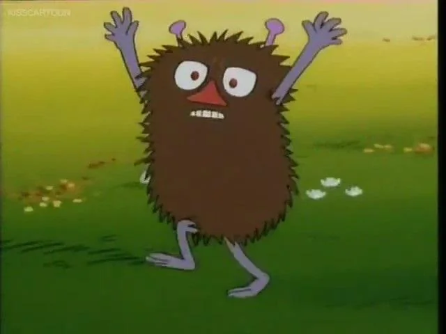
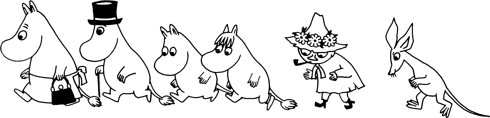

... and a massive Moomin fan
I’m a software development student, passionate about modern web development, automated testing, and DevOps. I love building clean, user-friendly applications and improving workflows with CI/CD and automation.
Outside of coding, I value calm and meaningful moments — like watching thoughtful movies with friends or spending time with people who matter to me.
...and also slightly (okay, very) obsessed with Moomins.
For my bachelor’s thesis, I designed and implemented a CI/CD pipeline using Microsoft Azure DevOps. The project focuses on automating software delivery and improving quality assurance through continuous testing.

HTML5 & CSS
React
CI/CD Pipelines
Azure DevOps
Cypress (End-to-End Testing)
Git & Version Control
Problem-solving
Strong attention to detail
Structured documentation
Continuous learning mindset
Ability to work independently on long-term projects
